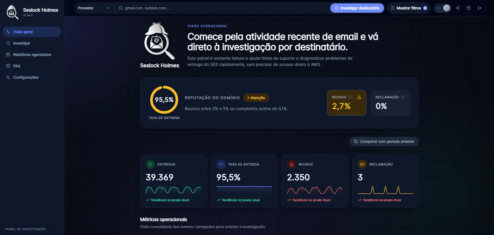
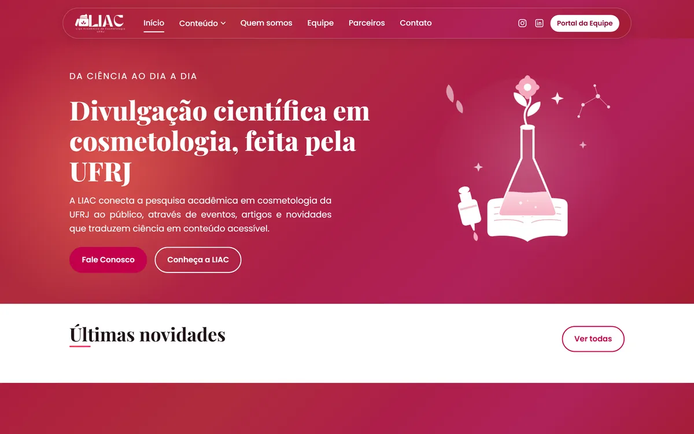
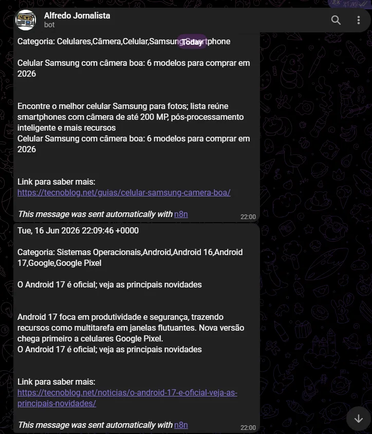
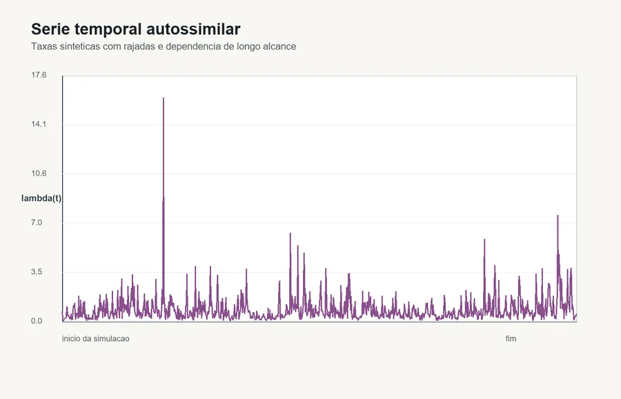

Rio de Janeiro, RJ · Aberto a novas oportunidades
Renato de Azevedo Caldas
Analista de Suporte de Sistemas Cloud & Automação
Trabalho onde o software encosta na operação: integrações com ERP, rotinas que eliminam trabalho manual, bancos de dados em produção e diagnósticos que viram número — como uma taxa de bounce de 11,6% para 0,8%.
Resultados em números
Sobre
Software com olhar de quem sustenta a operação.
Tenho 21 anos, sou do Rio de Janeiro e estudo Ciência da Computação na Universidade Veiga de Almeida. Minha rotina mistura desenvolvimento, suporte técnico, automações, análise de banco de dados e melhoria contínua de processos internos.
Como Analista de Suporte de Sistemas na Ramada Atacadista, atuo em ambientes produtivos que conectam sistemas corporativos, dados e infraestrutura. Diagnostico bancos Oracle e AWS, testo e faço merge de pull requests, construo workflows no n8n e ajusto o ERP Sankhya quando o processo pede.
Gosto de transformar requisito de negócio em entrega confiável: APIs, workflows, dashboards e rotinas que reduzem atrito para quem depende de tecnologia todos os dias. Direciono meu desenvolvimento para cloud, bancos de dados, integrações e automação.
Produção de verdade
Ambientes ativos, ERP, bancos corporativos e integrações que não podem cair.
Automação primeiro
Se a tarefa se repete, ela vira workflow, script agendado ou integração por API.
Resultado mensurável
Entrega boa é a que aparece no indicador — bounce, tempo de rotina, chamado resolvido.
Aprendizado contínuo
Estudo cloud, containers e arquitetura enquanto aplico no trabalho e em projetos próprios.
Stack
Da ideia até rodando em produção.
As ferramentas que uso no dia a dia, agrupadas pelo problema que resolvem.
Linguagens
PythonJavaScriptTypeScript
GoSQLHTMLCSS
Cloud & DevOps
AWSOracle CloudDocker
GitHub ActionsVercelGit
Backend & APIs
Node.jsDjangoREST
WebhooksPostman
Dados
PostgreSQLMySQLSupabase
Power BI
Automação
n8nIntegrações por API
GitHub Actions
Ambiente corporativo
Onde a tecnologia encontra o processo da empresa.
Sankhya ERPSAP GUIGLPI
Windows ServerLinuxScrum
Projetos
O que eu construí e o que mudou depois.
Projeto em destaque
No ar
7
estrelas no GitHub
Seslock Holmes
TypeScript · React · Supabase · AWS SES · Vercel
Dashboard de investigação de e-mails do AWS SES. Centraliza eventos, entregas, bounces e complaints, rastreia cada mensagem, gera relatórios agendados por e-mail e permite compartilhar visões públicas somente-leitura com token. Cada bounce diagnosticado virou correção concreta de endereço, MX ou DMARC.
11,6% → 0,8%
bounce · 1 provedor
6,8% → 1,8%
bounce · geral
RLS + RBAC
viewer / manager

No ar
1
estrelas no GitHub
LIAC Club
TypeScript · React · Supabase · Deno · Vercel
Hub de portfólio digital da LIAC, a Liga Acadêmica de Cosmetologia da UFRJ. A liga publica novidades, eventos e artigos científicos, e apresenta equipe, projetos e parceiros. O backend é meu também: Edge Functions em Deno sobre Supabase, com autenticação da equipe, CRUD dos conteúdos, convites por cargo e log de auditoria.
Portal próprioequipe publica sem dev
Deno + Supabaseedge functions
Convitespor cargo, com auditoria

Automação sem servidor
1
estrelas no GitHub
Projeto Alfredos
Node.js · GitHub Actions · Telegram · Gemini
Quatro bots que nasceram em n8n self-hosted com Docker e foram migrados para GitHub Actions, sem máquina ligada 24/7. Enviam notícias de tecnologia, jogos grátis da Epic, alertas de vulnerabilidade nas dependências dos meus repositórios e, às 23:59, um relatório executivo do dia gerado por LLM.
15 minciclo do jornalista
R$ 0custo de infraestrutura
4 workflowsem produção

Outros repositórios

Python · Simulação
1 estrelas no GitHubsimulador_filas_estocasticas
Simulador de eventos discretos para modelar e analisar sistemas de atendimento com teoria das filas. Gera séries autossimilares com rajadas e exporta os gráficos da simulação.
Ver repositórioGo · REST API
1 estrelas no GitHubapi-rencaldas
API de estudos para dar suporte aos meus repositórios e projetos, com integração planejada ao ecossistema do GitHub.
Ver repositórioPython · Criptografia
1 estrelas no GitHubprojeto_extensao_vi
Cifra simétrica de bloco de 32 bits com rede de substituição-permutação, em Python puro e sem dependências externas. Projeto de Segurança de Sistemas e Criptografia (UVA).
Ver repositórioPython · Estudos
0 estrelas no GitHubWorkspace---Python
Meu centro de estudos em Python: exercícios e mini-projetos organizados por tópico — fundamentos, estruturas de dados, tratamento de erros, algoritmos e grafos, CLI e LeetCode.
Ver repositórioPython · Django
2 estrelas no GitHubLabSoftwareA2
Sistema web em Django com cadastro de contas e upload de mídia, feito para a disciplina de Laboratório de Software.
Ver repositórioHTML · CSS · JS
0 estrelas no GitHubprojeto-discover
Página de links no estilo DevLinks, com alternância de tema claro/escuro em JavaScript puro. Projeto do programa Discover, da Rocketseat.
Ver repositórioHTML · CSS · JS
1 estrelas no GitHubrencaldas.github.io
Este portfólio. Site estático sem framework nem bundler, com tema claro/escuro, estudo de caso bilíngue e formulário de contato sem backend.
Ver repositórioExperiência
Trajetória profissional.
Da rotina administrativa ao ambiente de produção — sempre puxando para o lado técnico.
Analista de Suporte de Sistemas
Ramada Atacadista
Melhorias em sistemas internos, site, aplicativo, workflows n8n e ERP Sankhya. Testes e merge de pull requests, diagnóstico de bancos Oracle e AWS, integrações de API e apoio a correções em produção. Suporte via GLPI, manutenção de equipamentos e participação em sprints e cerimônias Scrum. Desenvolvi o Seslock Holmes, que reduziu a taxa de bounce de 11,6% para 0,8% em um provedor e de 6,8% para 1,8% no cenário geral.
Auxiliar Administrativo
Multiplan Empreendimentos S.A.
Controle documental, solicitações no SAP GUI e análise de planilhas. Automações em Excel que reduziram em aproximadamente 50% o trabalho manual das rotinas administrativas da área.
Agora
Em evolução contínua.
AWS Solutions Architect
Docker & Kubernetes
Terraform & CI/CD
Microservices
Clean Architecture
LLMs aplicados à automação
Platform Engineering
Observabilidade
Contato
Vamos conversar.
Aberto a oportunidades e conversas sobre cloud, automação, dados, backend e integrações corporativas. Respondo em até dois dias úteis.